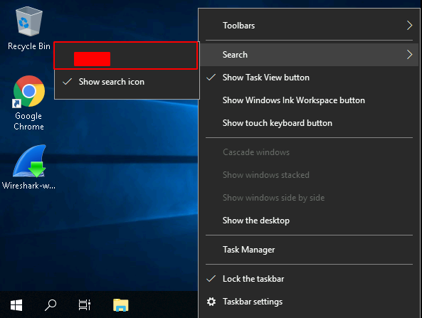
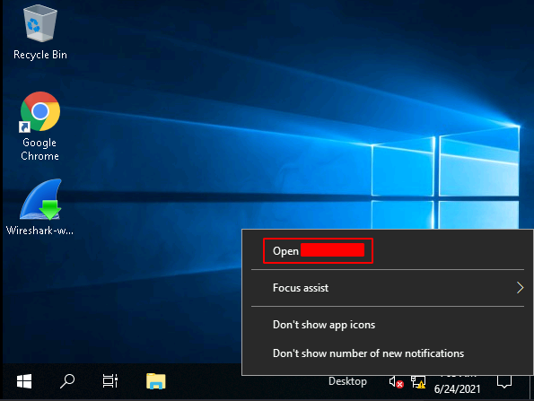
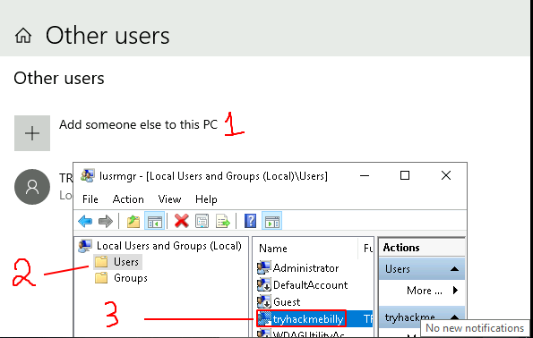
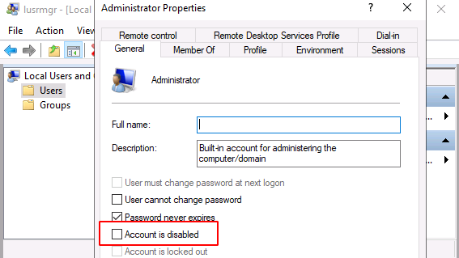
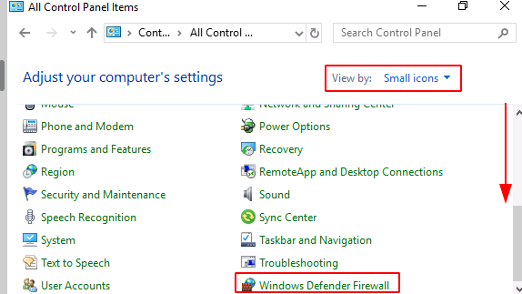

Windows Fundamentals 1
Hello to all , this is the first write-up for us , i'd like to share knowledge in Windows Fundamentals with infosec community , btw this room is one of the best rooms for beginners to get started with ...
Details about the room :-
Title : Windows Fundamentals 1
Description : Introduction to the Windows operating system.
Here we go ...
===========================
Introduction to Windows
===========================
Q) Read above and start the virtual machine.
A) No Answer Needed
===========================
style="text-align: left;">Task 2 : Windows Editions
===========================
Q) What encryption can you enable on Pro that you can't enable in Home?
H) https://www.microsoft.com/en-us/windows/compare-windows-10-home-vs-pro
A) BitLocker
===========================
Task 3 : The Desktop (GUI)
===========================
Q) Which selection will hide/disable the Search box?
H) 
A) Hidden
-------------------------------------------------------------
Q) Which selection will hide/disable the Task View button?
A) Show Task View button
-------------------------------------------------------------
Q) Besides Clock, Volume, and Network, what other icon is visible in the Notification Area?
H) 
+H ) right click on notifications
A) Action Center
===========================
Task 4 : The File System
===========================
Q) What is the meaning of NTFS?
H) first line
A) New Technology File System
===========================
Task 5 : The Windows\System32 Folders
===========================
Q) What is the system variable for the Windows folder?
H) last word in the 4th line
A) %windir%
===========================
Task 6 : User Accounts, Profiles, and Permissions
===========================
Q) What is the name of the other user account ?
H)
A) tryhackmebilly
-------------------------------------------------------------
Q) What groups is this user a member of ?
H) Double Click
A) Remote Desktop Users,Users
-------------------------------------------------------------
Q) What built-in account is for guest access to the computer?
H) check other users
A) Guest
-------------------------------------------------------------
Q) What is the account status?
H) Users => admin => double click => the answer contains disabled
I) 
A) Accound is disabled
===========================
Task 7 : User Account Control
===========================
Q) What does UAC mean?
H) Google it
A) User Account Control
===========================
Task 8 : Settings and the Control Panel
===========================
Q) In the Control Panel, change the view to Small icons. What is the last setting in the Control Panel view?
H) 
A) Windows Defender Firewall
===========================
Task 9 : Task Manager
===========================
Q) What is the keyboard shortcut to open Task Manager?
A) Ctrl+Shift+Esc